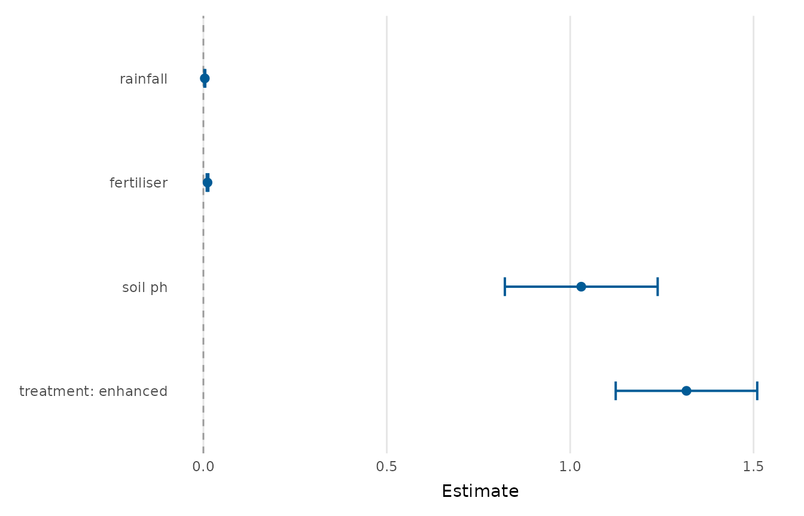
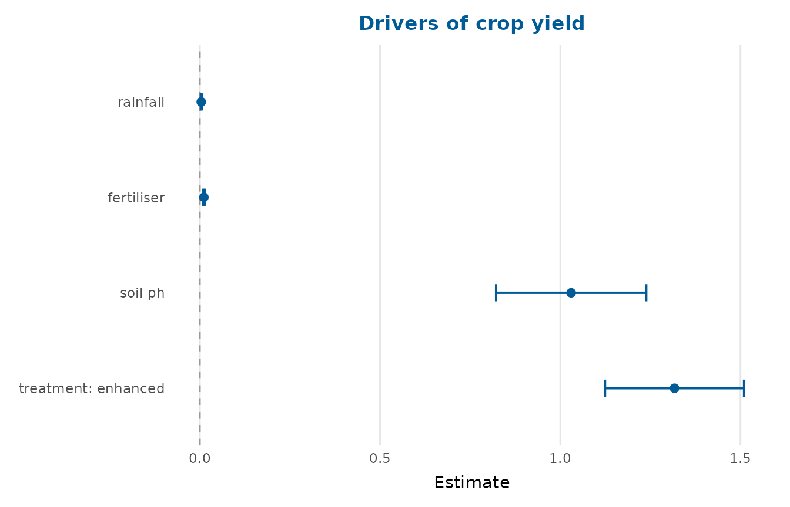
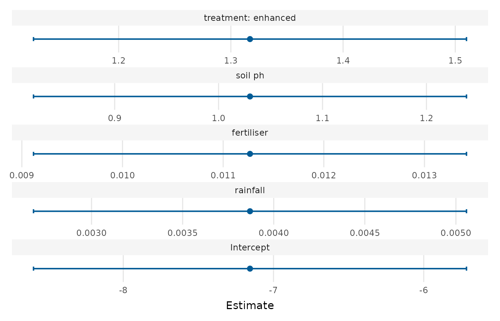
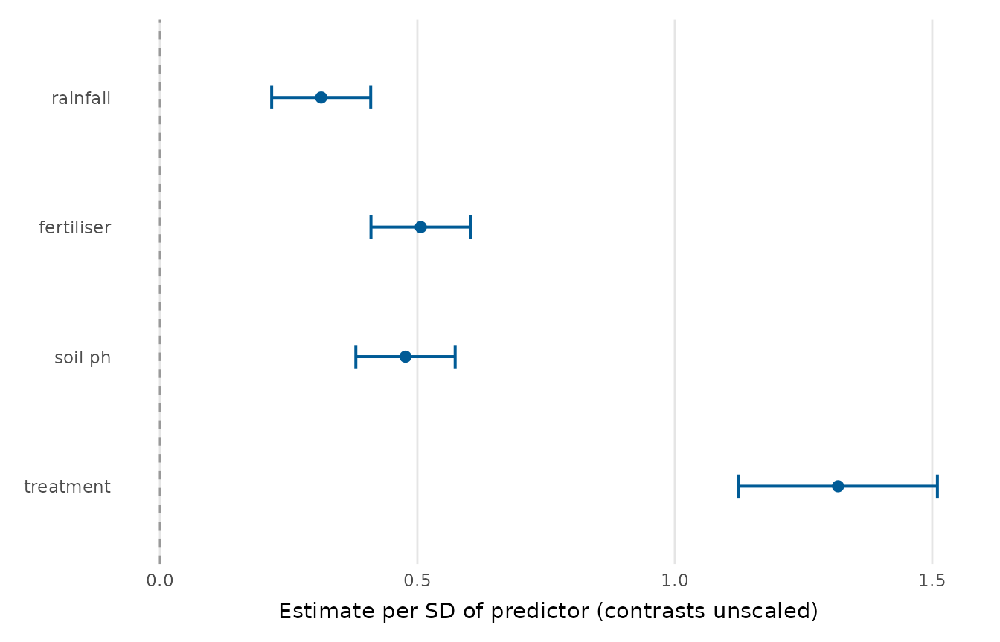
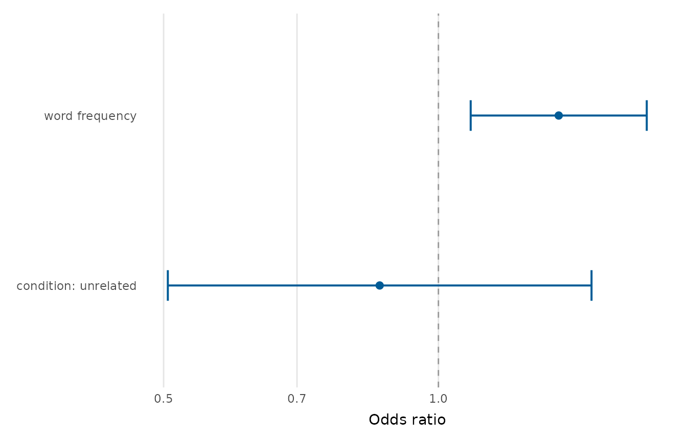

Draws a horizontal point-and-interval ("forest") plot of model estimates.
The input can be a fitted model (anything tidy_estimates() understands) or
a data frame of pre-computed estimates.
Usage
coefficient_plot(
x,
conf_level = 0.95,
intercept = FALSE,
order = c("none", "ascending", "descending"),
labels = NULL,
interaction = c("times", "asterisk", "colon", "space"),
point_colour = depictr_brand(),
reference_colour = depictr_reference(),
reference_line = if (exponentiate) 1 else 0,
point_size = 2.2,
line_size = 0.7,
facet = FALSE,
scales = c("fixed", "free"),
standardise = FALSE,
sd_multiple = 1,
exponentiate = FALSE,
title = NULL,
subtitle = NULL,
x_lab = NULL
)Arguments
- x
A fitted model or a tidy data frame of estimates.
- conf_level
Confidence/credible level, passed to
tidy_estimates()whenxis a model: a single number strictly between 0 and 1.- intercept
Whether to keep the intercept term. Defaults to
FALSE, since the intercept is seldom of interest on a forest plot and its scale often overwhelms the other terms.- order
Order of the terms.
"ascending"puts the smallest estimate at the bottom and the largest at the top, so estimates increase up the axis."descending"does the reverse, and"none"keeps model order from top to bottom. The faceted layout (facet = TRUE) stacks its panels the other way up.- labels
Optional display labels for the terms. An unnamed vector gives one label per term in model order (the order
tidy_estimates()returns, after the intercept is dropped unlessintercept = TRUE), whateverorderis. A named vector mapping raw term names to labels, such asc(soil_ph = "Soil pH"), is safer. IfNULL, the coefficient of a factor level is labelled with its variable and level, inside interaction terms too, so the contrast of enhanced with the reference level readstreatment: enhanced. Other names are tidied withformat_terms().- interaction
Passed to
format_terms()to control how interaction terms are rendered (ignored whenlabelsis supplied).- point_colour, reference_colour
Colours for the estimates and the reference line.
- reference_line
Position of a vertical reference line. Defaults to 0, or to 1 when
exponentiate = TRUE, where a ratio of 1 means no effect. UseNAto omit it.- point_size, line_size
Size of the points and interval lines.
- facet
Whether to give each term its own panel with a free x-axis, laid out one per row. This removes the squish that occurs when terms live on very different scales (for example a large intercept alongside small slopes). Defaults to
FALSE, preserving the shared-axis layout. A convenience alias forscales = "free".- scales
Either
"fixed"(the default, a single shared x-axis) or"free"(one free-scaled panel per term). Whenfacet = TRUEthis is forced to"free".- standardise
Whether to scale each coefficient by the spread of its inputs, following Gelman (2008). A continuous input (numeric, with more than two distinct values) is scaled by
sd_multipletimes its standard deviation in the rows the model used, so its slope becomes the change in the outcome per SD. Factor, character, logical and two-valued numeric inputs (0/1, say) are left unscaled, since a contrast already compares two groups and its per-SD value would depend on how balanced the groups happen to be. An interaction is scaled through its inputs:rainfall:treatmentby the SD ofrainfall, and a product of two continuous inputs by both their SDs. Matrix-valued terms such aspoly()andns()are left unscaled, with a message. An interaction of continuous inputs draws a warning unless they are all centred. Otherwise, each input's main effect is its slope where the others are zero, and Gelman's remedy is to centre the inputs and refit. A continuous slope and a contrast are comparable only roughly, most nearly withsd_multiple = 2. Requires a fitted model (ignored, with a warning, for a tidy data frame). Defaults toFALSE.- sd_multiple
How many standard deviations of a continuous input one unit of the standardised scale spans when
standardise = TRUE. Defaults to 1. Use 2 for Gelman's (2008) convention, under which the coefficient of a continuous input is comparable to that of a balanced binary one.- exponentiate
Whether to draw the exponentiated estimates and intervals on a log10 axis, which shows the coefficients of a logistic regression as odds ratios and those of a Poisson or negative binomial model as rate ratios. It applies after
standardise, so a standardised slope becomes a ratio per SD of its predictor. A data framexmust hold estimates on the link scale. Defaults toFALSE.- title, subtitle, x_lab
Plot title, subtitle and x-axis label.
x_labdefaults to "Estimate", or, whenstandardise, "Estimate per SD of predictor" ("per 2 SD" withsd_multiple = 2), followed by "(contrasts unscaled)" when a factor or binary term is drawn. The label names the convention on the figure itself, because only the predictors are rescaled here: a fully standardised beta would rescale the outcome too. Withexponentiate = TRUE, "Estimate" gives way to the name of the ratio: "Odds ratio" for a logit link, "Rate ratio" for a log link in a Poisson, quasi-Poisson or negative binomial model, "Risk ratio" for a binomial model with a log link and "exp(Estimate)" otherwise. The last covers anlm(log(y) ~ x)slope, whose exponential is a ratio of geometric means.
Value
A ggplot2::ggplot object.
References
Gelman A (2008). “Scaling regression inputs by dividing by two standard deviations.” Statistics in Medicine, 27(15), 2865–2873. doi:10.1002/sim.3107 .
Examples
fit <- lm(yield ~ rainfall + fertiliser + soil_ph + treatment,
data = crop_yield)
coefficient_plot(fit)

# Order terms and add a title
coefficient_plot(fit, order = "descending", title = "Drivers of crop yield")

# When an intercept or large term squishes the rest, give each term its own
# free-scaled panel:
coefficient_plot(fit, intercept = TRUE, facet = TRUE)

# Or scale the continuous slopes per SD of their predictors, leaving the
# treatment contrast in the outcome's units:
coefficient_plot(fit, standardise = TRUE)

# Odds ratios from a logistic regression, on a log axis with the line at 1:
gfit <- glm(accuracy ~ word_frequency + condition,
data = lexical_decision, family = binomial)
coefficient_plot(gfit, exponentiate = TRUE)
